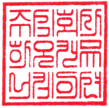

전문 블로그 콘텐츠
검색하는 의뢰인을 데려오는 글
- 실제 검색 질문 기반 키워드 설계
- 사례·판례 해설로 전문성 증명
- 법률 용어가 아닌, 의뢰인의 언어로
등록 변호사 4만 명, 매년 1,700명이 새로 배출됩니다. 이제 실력만으로 의뢰인이 찾아오길 기대하기 어려운 시대입니다.
하오는 변호사법을 지키며, 검색과 AI에서 '발견되고 선택되는' 변호사를 만듭니다.
대한변협
등록 변호사
매년 새로
배출되는 변호사
국내 검색
네이버 점유율
블로그로 만든
오가닉 상담 구조
※ 대한변호사협회 등록 현황 및 국내 검색 점유율 기준
콘텐츠 없이 고액 광고에만
클릭당 수만 원, 상담은 그대로.
저가 외주 글로 채운 블로그
순위도, 신뢰도 얻지 못했습니다.
모든 채널을 동시에 시작
힘이 분산돼 어느 것도 안 됐습니다.
검색·AI에 안 보이는 변호사
의뢰인의 선택지에 오르지 못합니다.
문제는 실력이 아니라, 발견되지 않는 구조입니다.
노출이 아니라 '상담'을 만드는 4가지 축입니다.
검색하는 의뢰인을 데려오는 글
지금 변호사를 찾는 사람에게
AI가 추천하는 변호사로
클릭을 상담 신청으로
모든 걸 동시에 하지 않습니다. 효과 순서대로, 콘텐츠부터 쌓습니다.
국내 검색의 62.9%. 실제 의뢰인이 검색하는 질문을 제목으로, 사례·전문성으로 신뢰를 쌓습니다. (1~3개월 유입, 6개월 상담 구조)
지역 기반 검색 상단 노출. 리뷰·별점 관리로 상담 전환율을 끌어올립니다.
구글 SEO 구조 + 구조화된 FAQ·프로필로 ChatGPT·Perplexity 답변에 대응합니다.
인지도를 빠르게 올리고, 콘텐츠 기반이 쌓인 뒤 광고로 가속합니다.
먼저 콘텐츠 자산을 쌓고, 광고는 그 위에 얹습니다.
그래야 광고비가 새지 않습니다 →
음주·교통사고·형사사건 등 급박한 검색 대응
이혼·상속·양육 등 민감한 상담 신뢰 설계
기업 자문·노동·계약 분쟁 B2B 포지셔닝
부동산·손해배상·민사 지역 기반 노출
고객은 이제 검색을 넘어 ChatGPT·Perplexity에게 묻습니다. 그 답 안에 들어가야 선택받습니다.
후기·전문성·평판과 AI 검색 노출을 종합해 추천 결과를 정리해 드립니다.
의뢰인은 급할 때 검색하고, 이제는 AI에게 변호사를 묻습니다. 그 답에 우리가 있어야 실제 선임으로 이어집니다.
네이버·구글 검색에서 우리 법률사무소 홈페이지가 상단에 노출되도록 사이트 구조·콘텐츠·키워드를 설계합니다.
ChatGPT·Perplexity가 답할 때 우리 법률사무소 홈페이지를 근거로 인용·추천하도록 콘텐츠와 신뢰 신호를 만듭니다.
구조화 데이터·엔티티·llms.txt 정비로 생성형 AI가 우리 브랜드를 정확히 학습·신뢰하게 만듭니다.
단순한 홈페이지가 아니라, 검색과 AI에 발견되는 구조로 처음부터 설계합니다.
하오커뮤니케이션은 이미 함께하고 있는 고객사와
동일 지역, 동일 업종이 겹치는 업체는 새로 받지 않습니다.
경쟁사끼리 같은 손을 잡을 수는 없으니까요.
맡은 한 곳의 성과에만 집중하겠다는, 하오커뮤니케이션의 약속입니다.

변호사 4만 명 시대, 의뢰인은 검색과 AI로 변호사를 찾고 비교합니다. 검색에 보이지 않으면 아무리 뛰어난 실력도 선택지에 오르지 못합니다. 마케팅은 선택이 아니라 노출의 기본이 되었습니다.
모든 채널을 동시에 시작하면 힘이 분산됩니다. 국내 검색의 62.9%를 차지하는 네이버 블로그(전문 콘텐츠)부터 쌓고, 플레이스·독립 홈페이지·AI 검색으로 확장하는 것이 정석입니다.
있습니다. 단, 저가 외주 짜깁기 글로는 순위도 신뢰도 얻지 못합니다. 실제 의뢰인이 검색하는 질문을 제목으로, 사례·전문성을 담은 콘텐츠만이 상담으로 이어집니다. 보통 1~3개월에 유입, 6개월에 오가닉 상담 구조가 형성됩니다.
변호사법과 광고 규정을 숙지한 상태로 콘텐츠·광고를 설계합니다. 규정 준수를 전제로 안전하게 진행해 리스크를 사전에 차단합니다.
네. 구조화된 FAQ·프로필·스키마와 독립 홈페이지 SEO로 AEO·GEO 최적화를 진행해, AI 답변에서 신뢰 변호사로 인용되도록 설계합니다.